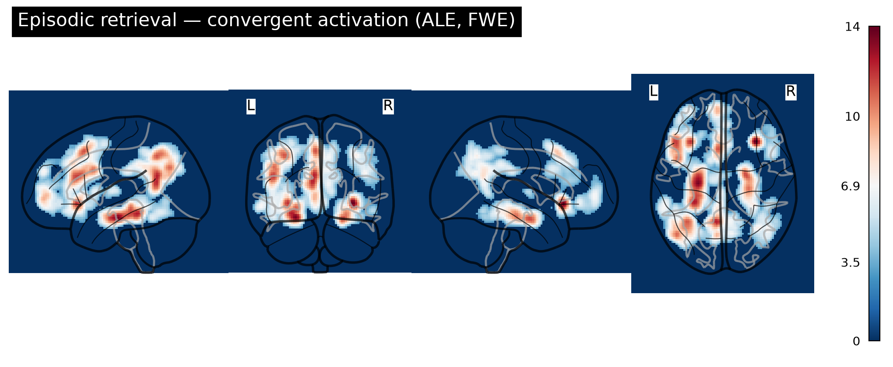
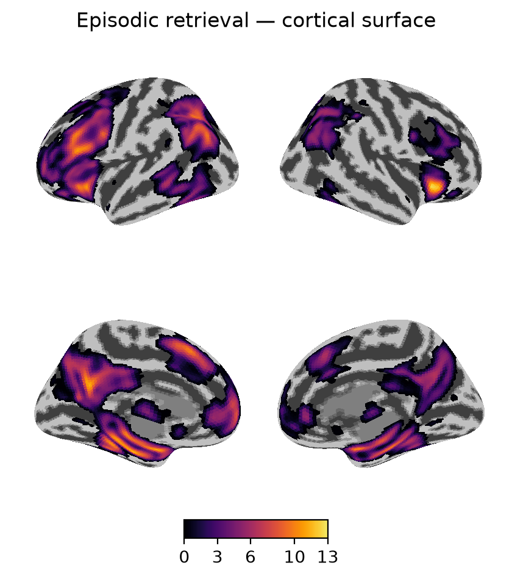
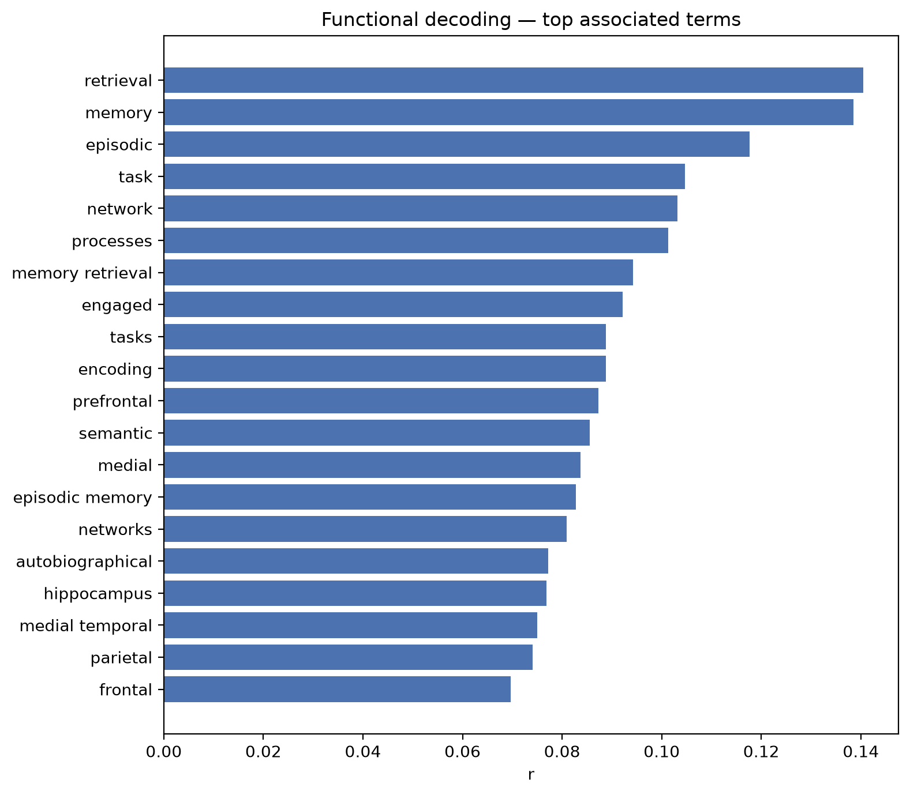

Where the brain converges during episodic memory retrieval
A reproducible synthesis of the published fMRI literature —
434 experiments pooled from two independent coordinate databases
(Neurosynth + NeuroQuery) with Activation Likelihood Estimation, then
stress-tested for robustness and mapped from every angle.
Activation Likelihood Estimation with cluster-level
family-wise-error correction (voxel p<0.001, cluster p<0.05, 2,000
permutations). Peaks are labelled with the Harvard–Oxford atlas.

Glass brain. A see-through projection; brighter = stronger
cross-study convergence. The whole recollection network at a glance.

Inflated surface. Convergence on the folded cortex, with
sulci unfolded so buried activation is visible.
Region (peak)
x
y
z
Peak ALE-z
Size (mm³)
Right anterior insula
32
24
−4
13.8
6,360
Left hippocampus (→ precuneus, parahippocampal, parietal)
−24
−18
−18
13.5
90,392
Left orbitofrontal / inferior frontal
−32
24
−4
11.9
76,168
Right hippocampus
24
−10
−20
11.5
19,984
Right lateral parietal (angular / LOC)
36
−62
44
7.3
15,896
Thalamus / accumbens
−12
6
8
6.3
6,440
Right inferior frontal gyrus
48
14
30
6.1
6,968
The strongest convergence is in the
hippocampus and a large left-lateral cluster spanning
precuneus/posterior-cingulate and lateral parietal cortex — the canonical
core recollection network, plus lateral prefrontal retrieval-control regions.
02Functional decoding
What the region is “about”
Reverse inference: the cognitive terms most associated with the
convergent region across ~14,000 studies. Memory/retrieval terms rise to the
top — an independent confirmation of the region's function.

Top associated terms. Bar length = association strength.
PRISMA flow. How the pool narrows from every record identified
to the 434 experiments included.
06Honest scope
What this is — and isn't
This is a reproducible computational meta-analysis that
recovers the established episodic-retrieval network from large automated
databases, with layered robustness and validation. It is a high-throughput
complement to — not a replacement for — a hand-screened systematic review:
it uses text-mined coordinates and a fixed kernel (databases don't report
per-study sample sizes), and it confirms rather than overturns the known
literature. A hand-curated, sample-size-weighted ALE is the planned next step.